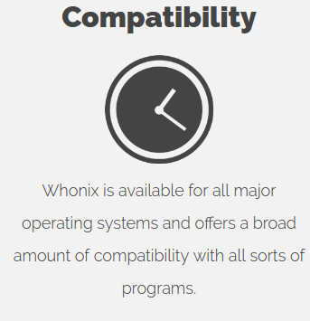

Good day,
Was talking about input in regards to the question whether or not I should use the mentioned template, start from scratch or continue the current effort. Still, thank you very much for the linked discussion.
Have a nice day,
Ego

Good day,
Was talking about input in regards to the question whether or not I should use the mentioned template, start from scratch or continue the current effort. Still, thank you very much for the linked discussion.
Have a nice day,
Ego
Btw another super simple website, I guess: https://getlantern.org (the domain name is not that great, though, just lantern.org would be better)
Good day,
May be able to orient based on that, since sadly using it as a base isn’t possible, as it uses Cactus instead of Jekyll.
Have a nice day,
Ego
Good day,
What do you think about these sites: https://apricityos.com/ and https://elementary.io/ Just so I have a few more things to orient on.
Have a nice day,
Ego
Ego:
What do you think about this site: https://apricityos.com/ Just so I have a few more things to orient on.
I think the image in the middle of the page wastes a lot of space. It is
better to have a central easy download button there. I would leave the
md5, torrent, RC, beta stuff out. The text after the beta download is
TLDR. Somehow not inviting to read. The other images on the page if you
scroll down seem unrelated, but perhaps never mind. Sometimes these
background images make the text difficult to read.
http://egobits1.github.io/ has a nice presentation style. The stay
anonymous, based on Tor, Leak impossiblity chapters look best.
Good day,
So on “egobits1.github.io”, I’ve uploaded a new and refined version of the homepage, keeping in mind what has been discussed before. Furthermore, added two “prototype wiki’s” which may be tested and compared to mediawiki and dokuwiki, though more on that in the mediawiki thread.
Have a nice day,
Ego
Awesome!
The homepage and download page replacement http://egobits1.github.io/ looks very good to me.
Related, the mediawiki replacement discussion:
mediawiki replacement
I like to keep these discussions split as far that is possible.
Good day,
So, just a few things about it:
First of all, seeing how @elioqoshi just created a new logo, I’ll look into ways of integrating it with the new homepage.
Second, refining the “OS-Logo’s” is also something I still need to do, seeing how they apperantly appear to be slightly distorted in certain browsers/on certain configurations.
Third, any idea on what symbol I should use for “Compatibility”? The clock after all is just a placeholder, as I couldn’t come up with anything…

Fourth, somehow whenever I create the “OS list” and link the pictures to their respected site’s, I end up having the text of the box farthest to the right appear blue for some reason, despite having rewritten and looked through the code a dozen times. This was the case with the first homepage as well. Will have to look into that as well.
Have a nice day,
Ego
Fourth, somehow whenever I create the “OS list” and link the pictures to their respected site’s, I end up having the text of the box farthest to the right appear blue for some reason, despite having rewritten and looked through the code a dozen times.
That’s because you don’t close the a-tag properly:
<a href="/windows"><img width="350" height="150" src="/img/win10.jpg" alt="Windows" class="editable"><a/> (line 75)
it has to be</a>, not <a/>
I put “compatible” and “compatibility” into a search engine, section images to get some inspiration.
What about a puzzle as symbol?
https://pixabay.com/en/puzzle-share-four-fit-1152800/
https://pixabay.com/en/puzzle-last-particles-piece-654957/
https://pixabay.com/en/connect-connection-cooperation-20333/
https://pixabay.com/en/puzzle-puzzle-piece-play-drawing-1318352/
https://pixabay.com/en/puzzle-share-four-fit-1152796/
Also useful, google PageSpeed Insights. It is important for SEO (so the SEO people say).
(The image optimization complaint will soon be fixed on whonix.org server by me. No need to optimize the images right now, I can do that once we install the new homepage on whonix.org)
Can you please link from all http://egobits1.github.io/ pages to the usual Whonix imprint https://www.whonix.org/wiki/Impressum? Then I could blog about the website draft to get more input.
Good day,
Thank you very much for pointing out, went almost crazy because of that yesterday. Was a “missing the trees for the forest” kind of situation.
Could be an option, even though the ones you listed aren’t really fitting in my opinion, a completley flat, slightly grey. puzzle-piece probably looks more homogenous. Will therefore try some things.
Will take into account what the test shows and try to optimize that.
Will do.
Have a nice day,
Ego
Hey guys, I refreshed the website a bit and added some changes. I believe there are some other additions to add, but this is a good start. Feedback appreciated so we can continue with the work 
Dear Patrick and team,
Long time reader here who appreciates all your efforts.
The revamped website page is looking great. Some minor suggestions to Elioqoshi’s nice edits:
Can the size of the Whonix logo be increased at the top of the page? It looks a little small IMHO
“Stay Anonymous” and “Keep your anonymity with Whonix” seems superfluous. What about “Preserve Your Anonymity with Whonix”
“Pre-installed, pre-configure” should be “Pre-installed, pre-configured”
Perhaps the brief Whonix description should be justified text instead of centered?
The Tor description could probably be changed from “that helps you defend against” to “helps defend against”
Perhaps the Client Access section could be simplified to “Connections through Tor are enforced and DNS leaks are impossible. Even malware with root privileges cannot discover the user’s real IP”
Perhaps the Compatibility section could be simplified to “Whonix is available for all major operating systems and most popular programs are fully compatible”
The colourful Linux penguin icon would look better at the bottom of the page IMHO
The OS X icon looks a little thin in contrast to the size of the white box. Perhaps a thicker icon is available?
Perhaps capitalize the download section to “Get Whonix Now”
I hope to assist with your Whonix documentation going forward if I have the time. I’ll save that for the other open thread, but it is a major project of it’s own.
There is LOTS of useful information there - a thesis perhaps 
Cheers
Good day,
Have to say, find most changes you made pretty suiting. Especially the slight modifications in areas like the typeface used, which leads to the site appearing a lot sleeker.
Making the logo mostly colorless also adds to this feeling. I did experiment with adding a few features from your logo design, though I feel like the “blood and red” mix suits the design as a whole better.
Now, I’m not sure what to think about the two symbols you added. The key doesn’t really fit the topic that much in my opinion, compared to an artists depiction of the isolation used by Whonix. Making that depiction more compact and easier readable seems to be a better way to go in my opinion. Also, “client access” was an old title I forgot to replace, “Isolation” actually fits there.
Regarding “compatibility”, I very much like the puzzle piece thanks to its flat and simple design. The same goes for the “social media buttons”, as the text based approach was more of a placeholder anyways.
Now, regarding the “OS selector”, as I like to call it, I feel like we should stick to one design language. I very much like the “black and white Tux”, though in between otherwise colored logos, he feels a bit out of place… Either using all colored or non colored logos would probably look more homogenous, in my eyes. Have to say though, centering the OS names is a small, but very effective touch.
Could you, @elioqoshi, maybe send me the changes you made? Perhaps I could invite you to the github page so we can actively work on this together.
Could obviously be done, though it has to be said that it wouldn’t be aligned with the rest of the “bar” then, which might appear rather odd.
You’re right about that, will look into some more differentiated things to put there, or maybe even getting rid of one of the two lines…
Thanks for pointing that out, will fix that right away.
Will upload a comparison picture here, so we may decide what suits better.
Sure. Admittingly, I actually just “borrowed” that description from https://www.torproject.org…
Can be discussed. Want to strech the “only” though, as it is what really sets Whonix apart from other Tor based OS’s. “Enforce” doesn’t sound strict enough to me, though that of course is up for debate.
Can be debated, have no real preference there.
Like said, either going “all colored” or “all black and white” would be what I’d recommend.
Funny you should said that. What @elioqoshi dug out there is actually an old design created by me that was consciously dropped because of the very reason you mentioned. Now, as I wrote way back when I made the replacement, I presonally find the thinner design to look better, so I can see why he choose it. I’ll see if I can get around to designing a new logo which is thicker, looks better and has no copyright problems.
Tried that once, didn’t fit the rest.
Have a nice day,
Ego
Good day,
So just finished adding the Impressum, etc. to the site, also did a bit of optimization. Still have to finish inlining the “css stuff” in its entirety, though there are certain things the pagespeed test shows, which sadly can’t be fixed by me. The browser-caching specifically, as the 10 minute limitation is imposed by github and can’t be avoided while using their services.
Have a nice day,
Ego
Hi Ego - all valid points.
Some further website design ideas for consideration.
Consider an eventual “Video Tour” as per the Qubes website. Use pre-existing youtube links to start with and perhaps embed the best existing one currently available:
https://www.qubes-os.org/tour/
Separate “Screen Shots” and “Research” pages for advanced topics ala Qubes:
https://www.qubes-os.org/screenshots/
https://www.qubes-os.org/research/
A separate architecture page like Qubes has - take existing snapshots of WS and WG functioning etc:
https://www.qubes-os.org/doc/architecture/
Consider a “Get Started” page like Qubes has:
https://www.qubes-os.org/getting-started/
Consider a separate “Torrc Manual” for Whonix torrc-related issues as per the Tor document layout (but not overlapping all their pre-existing work which you can simply link to directly and quote where necessary):
https://www.torproject.org/docs/tor-manual.html.en
Consider a “Support” page that is similar in design to TAILS. People can then stop wasting Patrick’s time, since most of these links can be replicated for Whonix. This will save lots of effort in the forums, thus freeing up Patrick for further development of the OS which is his core work. See below for the TAILS example:
https://tails.boum.org/support/index.en.html
Consider replicating elements of the Tails menu. This could then be embedded on each page of the Whonix website. For example:
Install Whonix
Getting started
Documentation
Help and Support
Contribute
News
Donate
OR
Use the Qubes method (across the top of each web page):
Tour
Get Started
Docs
Help
News
Team
Donate
In addition to the above list, you might consider an “Experts Guide” section, which would have a sub-menu similar to the one on the Tor project website. Their example is below (obviously it would need to be changed for relevant Whonix sub-categories):
Installing Tor on Debian/Ubuntu
Installing Tor on Fedora/CentOS
Installing Tor Source
MacPorts
Configuring a Relay manually
Configuring a Relay graphically
Configuring a Hidden Service
Understanding bridges
Verify package signatures
As currently proposed, at a minimum in the new design a ‘Docs’ or ‘Documentation’ or 'Wiki(s)'tag is required on the main Whonix page. This is the common approach used on all other privacy/anonymity websites e.g. JonDoNym, Qubes, TAILS, Tor etc.
Perhaps the ‘Help’ tab on the existing Whonix page could be recast as ‘Further help’ in the new design. The vast majority of users should not have to use stackexchange, the forum, torstackexchange or other avenues if they have read and understood the documentation properly - that is, once it is cleaned up and organized properly.
As a general comment, IMHO there is far too much text on each individual Whonix web page. The reason the other privacy/anonymity websites are far more user-friendly is because they balance nicely the use of text vs screen shots vs occasional videos on use vs tables. Less is more.
Of course, the eventual detailed (advanced) manual should retain the majority of information gathered over the last few years, but in a re-ordered state.
I don’t think that would be useful for users. A user usually has in mind what goal to accomplish. That goal is not “torrc”, but “make it work” or “censorship circumvention”. Instructions on how to modify torrc to accomplish various goals is documented on various documentation pages.
We do have a support page already.
https://www.whonix.org/wiki/Support
What specifically does the tails support page do better? Please create a new forum thread.
“if they have read and understood the documentation properly” - As sad as that is, it is an entirely unrealistic assumption. The redirection of support questions of generic upstream project questions to other upstreams was actually done by me to save time and space in Whonix forum.
Side menus waste a lot space and look awful on small screens.
There is a lot room for lots of opinions here. @bnvk, the new Qubes usability designer, once told me, that he isn’t offended by long scrolling pages.
Since we have the bright design and imprint now, we could blog about this. Here is the public preview. (Only visible to people following this very link.) (That link will break once posted.)
https://www.whonix.org/blog/?p=2039&preview=1&_ppp=047090ef51
If you desire any changes to that blog post, I can do them. If you like to have your own blog account to make the edits/posts yourself, I would not mind about that either. If not deemed useful, we can also put the blog post on hold. (usability is not a democracy.)
{kind=link}
{kind=link}